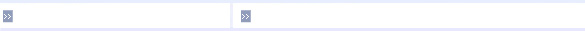

Cercetatorii au intrebat mai intai 33 participanti cat de des au jucat jocuri video in ultimul an. Au efectuat teste de imagistica prin rezonanta magnetica (cunoscute mai popular ca RMN-uri) si au descoperit ca cei care joaca jocuri de ac?iune in medie de 19 ore pe saptamana au mai putina materie cenusie in hipocampus decat cei care nu joaca jocuri video. Ulterior cercetatorii au rugat alti 43 oameni care nu joaca de obicei jocuri video sa petreaca 90 ore pe parcursul a aproximativ 10 saptamani jucand fie jocuri de actiune, sau jocuri Super Mario intr-un mediu controlat.
Concluziile lui Gregory West au fost ca oamenii din grupul care au jucat jocuri de actiune au mai putina materie cenusie in hipocampus, iar cei care au jucat jocuri Super Mario au inregistrat o crestere de materie cenusie în aceea?i zona.


Copyright 2020 C Lascu si F Claudiu. All rights reserved.
Gaming
Bun venit,
Ma numesc Ciprian, sunt , si prin intermediul acestui site doresc sa impart cu tine detalii despre hobbyul meu/nostru.
Hippocampusul este acea parte a creierului asociata cu navigarea spatiala, reglarea stresului si memoria. Unii cercetatori sunt de parere ca oamenii cu o cantitate redusa de materie cenusie in zona hipocampusului sunt predispusi la un risc mai mare de boli precum depresia sau boala Alzheimer.
Recent a fost efectuat la Universitatea din Montreal un studiu despre jocurile video si efectele acestora asupra creierului.
Aparent, ar exista o legatura intre GENUL de jocuri cu care ne delectam in timpul liber si cantitatea de materie cenusie din hipocampus. Concluzia a fost ca shooterele precum Call of Duty sau Medal of Honor afecteaza negativ creierul, pe cand jucatorii de platformere, jocuri de aventura sau puzzle-uri sunt afectati intr-un mod benefic.
In timp ce jocurile video violente pot duce la mai multa agresivitate si furie in jucatori, un nou studiu arata ca opusul este adevarat: jocurile video relaxante ii pot face pe oameni mai fericiti si mai buni.
Jocurile video violente pot creste agresivitatea si atunci cand un jucator continua sa se gandeasca la joc, potentialul de agresivitate poate dura pana la 24 ore, potrivit unui studiu Social Psychological and Personality Science (publicat de SAGE).
Nu numai ca jocurile video sunt bune pentru creier, acestea pot imbunatati si capacitatea dumneavoastra de a lua decizia corecta intr-o situatie si de a face acest lucru mai repede, potrivit unui nou studiu de la Universitatea din Rochester. Ceea ce te poate face si un sofer mai bun.
Date stintifice Studiu stintific